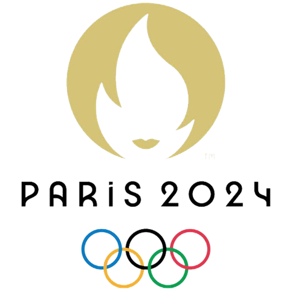
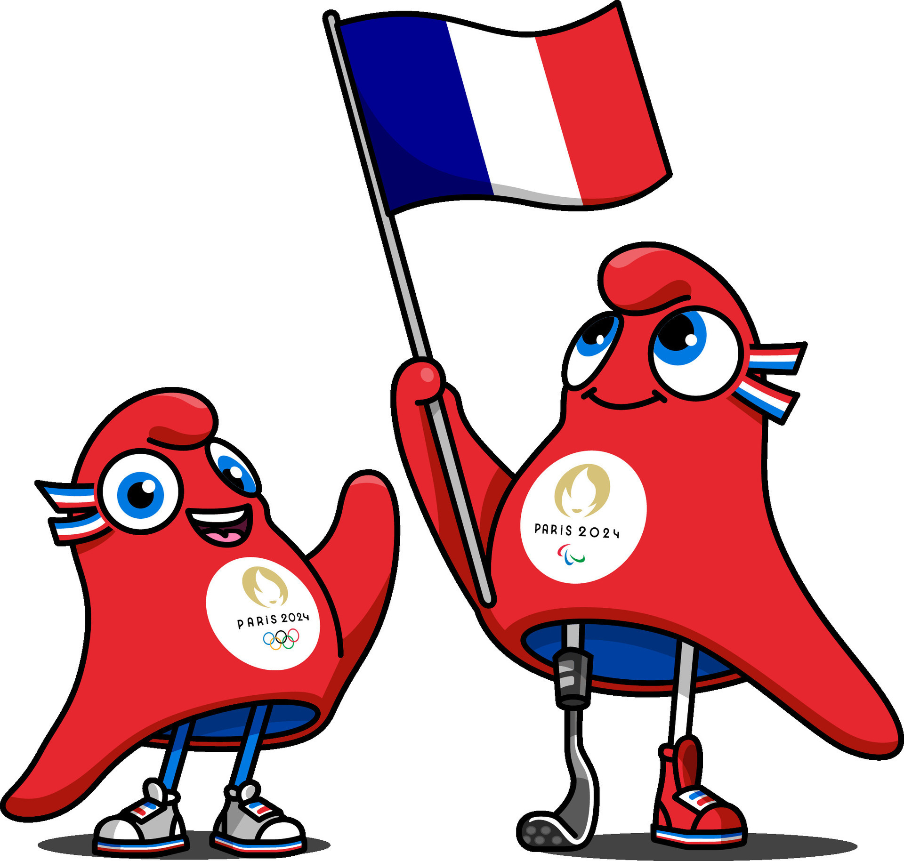

Jogos Olímpicos

As Olimpíadas de Paris 2024 foram realizadas entre os dias 26 de julho e 11 de agosto. A capital francesa já foi sede dos Jogos Olímpicos em outras duas edições, em 1900 e 1924. O evento de abertura aconteceu de forma inédita pela primeira vez fora de um estádio, no Rio Sena.
Essa foi a 33ª edição dos Jogos Olímpicos de Verão, que recebeu o breaking, tipo de dança, como nova modalidade, além da inclusão da prova de caiaque cross, uma nova categoria de prova da canoagem slalom.
Cerca de 10.500 atletas de diferentes países, sendo 274 atletas brasileiros, competiram em 32 esportes, distribuídos em 48 modalidades esportivas.
As Olimpíadas de Paris 2024 foram realizadas em Paris entre 26 de julho e 11 de agosto e contaram com mais de 10 mil atletas em 48 modalidades esportivas.
Paris foi definida como sede das Olimpíadas de 2024 no ano de 2017, durante assembleia do Comitê Olímpico Internacional (COI) realizada em Lima, no Peru.
A capital francesa recebeu os Jogos Olímpicos pela terceira vez, já que sediou a competição nos anos de 1900 e 1924.
Duas novas modalidades fizeram parte dos jogos de 2024: o breaking (estilo de dança) e um novo tipo de prova da canoagem slalom, o caiaque cross.
A abertura oficial das Olimpíadas de Paris 2024 foi realizada pela primeira vez fora de um estádio. O evento aconteceu no Rio Sena, e os atletas desfilaram em barcos.
O mascote desta edição dos jogos é a Phryge, um barrete frígio (espécie de gorro) que remete à Revolução Francesa.
274 atletas brasileiros participaram da edição de 2024, em Paris.
Los Angeles, nos Estados Unidos, será sede das próximas Olimpíadas, que acontecerão em 2028.
O time brasileiro conquistou um total de 20 medalhas, sendo três ouros, sete pratas e dez bronzes.
Em Paris, os brasileiros tiveram a segunda melhor campanha olímpica considerando o total de medalhas, atrás apenas da edição de Tóquio 2020.
Pela primeira vez, as mulheres do Brasil subiram mais vezes ao pódio olímpico do que os homens.

As Olimpíadas de Paris 2024 contaram com 32 esportes. Veja, abaixo, quais foram as modalidades esportivas: atletismo; badminton; basquete; basquete 3x3; boxe; breaking; canoagem de velocidade; canoagem slalom; ciclismo BMX freestyle; ciclismo BMX racing; ciclismo de estrada; ciclismo mountain bike; escalada; esgrima; futebol; ginástica artística; ginástica de trampolim; ginástica rítmica; golfe; handebol; hipismo; hóquei sobre grama; judô; levantamento de peso; luta; maratona aquática; nado artístico; natação; pentatlo moderno; polo aquático; remo; rugby sevens; saltos ornamentais; skate; surfe; taekwondo; tênis; tênis de mesa; tiro com arco; tiro esportivo; triatlo; vela; vôlei; vôlei de praia.